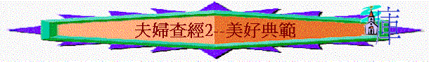

引言：在你認識的肢體中，有沒有一些夫婦的關係與生命，十分吸引你的？
一.
亞伯拉罕與撒拉(來11:8-10,17-19;彼前3:1-6)
1.聖經稱呼亞伯拉罕為信心之父，他的信心又有甚麼特別之處，令你感到羡慕與驚嘆？
2.作為一個弟兄，也是一家之主，若沒有從神而來的信心，整個家庭會怎樣？
3.彼得前書3:1-6題及亞伯拉罕的妻子----撒拉，為何要以她為例子，整段中心，想表達甚麼？
4.撒拉的順服又有甚麼特別的地方？從甚麼事件看到她有特別的特質？你又認為要順服一位如亞伯拉罕有這般大信心的丈夫，難不難？
5.一個家庭可以有這樣組合：
A丈夫很有信心，妻子卻不順服
B丈夫沒有信心，妻子卻順服
C丈夫沒有信心，妻子也不順服
D丈夫很有信心，妻子也很順服
試評估以上每種情況，若真是這樣，會有甚麼事情發生？
6.你認為你的家庭是那一種？為甚麼？
二.百基拉和亞居拉(徒18:1-4,18,羅16:3-5,林前16:19，提後4:19)
1.百基拉與亞居拉是誰？誰是男性，誰是女性？
2.在新約聖經多不多將兩夫婦的名字放在一齊？為何要有如此寫法？想表明他們甚麼？
3.他們在甚麼事情上同心？
4.羅16:5的寫法又有甚麼特別的地方？可表達他們有甚麼地方值得我們效法？
5.試分享你們在信仰上，最同心的事情是甚麼？現在彼此之間，又有甚麼地方想一同追求/事奉？